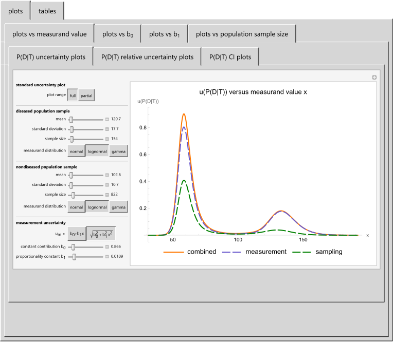
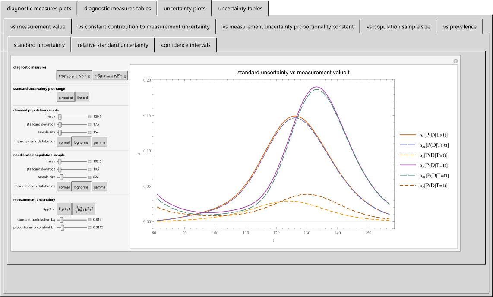

HCSL Publications
Bayesian Medical Diagnosis
1. Chatzimichail T., Hatjimihail AT. A Bayesian Inference Based Computational Tool for Parametric and Nonparametric Medical Diagnosis. Diagnostics. 2023;13(19):3135.
DOI: 10.3390/diagnostics13193135. PMCID: PMC10572594. PMID: 37835877.
Abstract
Medical diagnosis is the basis for treatment and management decisions in healthcare. Conventional methods for medical diagnosis commonly use established clinical criteria and fixed numerical thresholds. The limitations of such an approach may result in a failure to capture the intricate relations between diagnostic tests and the varying prevalence of diseases. To explore this further, we have developed a freely available specialized computational tool that employs Bayesian inference to calculate the posterior probability of disease diagnosis. This novel software comprises of three distinct modules, each designed to allow users to define and compare parametric and nonparametric distributions effectively. The tool is equipped to analyze datasets generated from two separate diagnostic tests, each performed on both diseased and nondiseased populations. We demonstrate the utility of this software by analyzing fasting plasma glucose and glycated hemoglobin A1c data from the National Health and Nutrition Examination Survey. Our results are validated using the oral glucose tolerance test as a reference standard, and we explore both parametric and nonparametric distribution models for the Bayesian diagnosis of diabetes mellitus.

Snapshot
2. Chatzimichail T, Hatjimihail AT. A Software Tool for Estimating Uncertainty of Bayesian Posterior Probability for Disease. Diagnostics. 2024;14(4):402.
DOI: 10.3390/diagnostics14040402. PMCID: PMC10887534. PMID: 38396440.
Abstract
The role of medical diagnosis is essential in patient care and healthcare. Established diagnostic practices typically rely on predetermined clinical criteria and numerical thresholds. In contrast, Bayesian inference provides an advanced framework that supports diagnosis via in-depth probabilistic analysis. This study’s aim is to introduce a software tool dedicated to the quantification of uncertainty in Bayesian diagnosis, a field that has seen minimal exploration to date. The presented tool, a freely available specialized software program, utilizes uncertainty propagation techniques to estimate the sampling, measurement, and combined uncertainty of the posterior probability for disease. It features two primary modules and fifteen submodules, all designed to facilitate the estimation and graphical representation of the standard uncertainty of the posterior probability estimates for diseased and non-diseased population samples, incorporating parameters such as the mean and standard deviation of the test measurand, the size of the samples, and the standard measurement uncertainty inherent in screening and diagnostic tests. Our study showcases the practical applica-tion of the program by examining the fasting plasma glucose data sourced from the National Health and Nutrition Examination Survey. Parametric distribution models are explored to assess the uncertainty of Bayesian posterior probability for diabetes mellitus, using the oral glucose tolerance test as the reference diagnostic method.

Snapshot
3. Chatzimichail T, Hatjimihail AT. A Software Tool for Applying Bayes Theorem in Medical Diagnostics. BMC Medical Informatics and Decision Making, in press.
Abstract
Background: In medical diagnostics, estimating post-test or posterior probabilities for disease, positive and negative predictive values, and their associated uncertainty is essential for patient care.
Objective: The aim of this work is to introduce a software tool developed in the Wolfram Language for the parametric estimation, visualization, and comparison of Bayesian diagnostic measures and their uncertainty.
Methods: This tool employs Bayes' theorem to estimate positive and negative predictive values and posterior probabilities for the presence and absence of a disease. It estimates their standard sampling, measurement, and combined uncertainty, as well as their confidence intervals, applying uncertainty propagation methods based on first-order Taylor series approximations. It employs normal, lognormal, and gamma distributions.
Results: The software generates plots and tables of the estimates to support clinical decision-making. An illustrative case study using fasting plasma glucose data from the National Health and Nutrition Examination Survey (NHANES) demonstrates its application in diagnosing diabetes mellitus. The results highlight the significant impact of measurement uncertainty on Bayesian diagnostic measures, particularly on positive predictive value and posterior probabilities.
Conclusion: The software tool enhances the estimation and facilitates the comparison of Bayesian diagnostic measures, which are critical for medical practice. It provides a framework for their uncertainty quantification and assists in understanding and applying Bayes' theorem in medical diagnostics.

Snapshot
Terms of Use
The material made freely available by Hellenic Complex Systems Laboratory is subject to its Terms of Use.